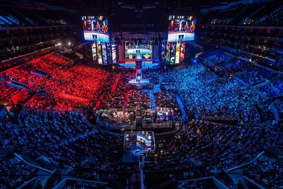
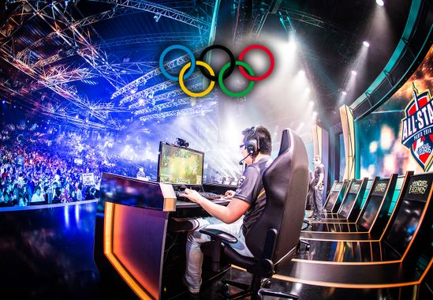

Définition et explication
Tout d'abord commençons par définir ce qu'est l'E-sport.
L'E-sport désigne le fait de jouer à des jeux vidéos en ligne contre d'autres personnes à travers Internet. Avec l'arrivée des premiers jeux vidéos dans les années 80/90 en mode réseau local et par la suite avec Internet, les jeux vidéos ont réussi à capter l'attention de nombreuses personnes ayant parfois pour ambition d'en faire leur métier
Dans les années 2000, l'E-sport connait une amélioration considérable au niveau de l'attention que les gens lui porte. Nous pouvons expliquer cela par la création de jeux vidéos qui ont énormement plu aux joueurs et qui ont fait parler d'eux: je pense notamment à des jeux comme Counter Strike Global Offensive (abrégé en CSGO), League of Legends (abrégé en LOL), DOTA 2,... D'autres jeux sont apparus plus tard et ont également eu du succès à l'international, pour les citer brièvement: Overwatch, Fortnite, PlayerUnknows Battlegrounds (PUBG), Tom Clancy's Rainbow Six Siege, et j'en passe.
Les jeux d'E-sport sont pour la majorité des jeux collectifs, où des équipes composées d'un certain nombre de joueurs s'opposent.
Pour plus de précisions vis à vis de certains de ces jeux, je vous invite à consulter le lien ci-dessous.
Pour les informations complémentaires, c'est ici (lien cliquable)

Organisation et impact
Je vais désormais vous parler des différentes manières de jouer compétitivement aux jeux vidéos. Nous avons tous une idée d'à quoi peut ressembler l'E-sport à au niveau, et il vrai qu'il est très impressionant de voir autant d'engouement ces dernières années pour des compétitions de ce type. Quand je pense à l'E-sport, je m'imagine tout de suite un grand rassemblement de fans qui supportent leurs équipes favorites, parfois à travers un stream/live diffusé en direct sur youtube ou twitch, ou alors s'ils ont la chance d'avoir un billet pour assister sur place au tournoi. Il est malheureusement impossible en raison de la pandémie de Coronavirus de voir ses joueurs préférés de nos propres yeux, et sans public, il n'est logiquement pas utile que l'événement loue une salle dédiée si les joueurs ont la possibilité de participer au tournoi chez eux, en utilisant leur propre matériel de jeu.
Je ne m'intéresse pas particulièrement à l'E-sport de haut niveau, mais je ne peux pas nier le fait qu'il m'est déjà arrivé de discuter des résultats de tournois de mes jeux préférés avec mes amis à l'école, ou alors d'être déçu qu'une équipe que je trouvais à mon goût perde. J'ai parfois aussi eu l'occasion de discuter d'E-sport avec mes parents, car ils trouvaient intéréssant l'évolution des jeux vidéos en sa basant sur leurs expériences quand ils étaient plus jeunes. Je trouve que l'image d'un joueur de haut niveau a elle aussi évoluée, et qu'aujourd'hui, un plus grand nombre de personnes ne voient pas ces sportifs comme des addicts mais plutôt comme des passionés.
Après avoir fait quelques recherches, j'ai trouvé une vidéo intéressante avec une touche d'humour pour se poser la question: L'E-sport est-il un sport?

Le lien vers la vidéo
Economie
J'aimerais à présent parler de la présence de l'économie dans l'E-sport. Il est clair que pour faire fonctionner autant de concours/tournois partout dans le monde, pour payer le salaire des joueurs, et pour que les cashprize soient attirants et donnent envie de s'investir, il faut de l'argent. Cet argent peut être récupéré de plusieurs manière, via des sponsors, des publicités sur la plateforme où est diffusée l'événement, et des dons. Le fait que des sponsors décident de faire confiance aux organisateurs des événements et aux équipes de joueurs montre une nouvelle fois que l'E-sport a eu un essor formidable ces dernières années sur le côté économique. Chaque année, cet argent augmente ce qui signifie plus d'événements compétitifs, une augmentation du nombre d'équipes et de joueurs intérressés qui auront moins peur de se lancer dans une carrière de joueur professionnel car ils auront plus de chances d'avoir un salaire.
Un bon site web sur l'économie de l'E-sport

Vers un futur aux JO?